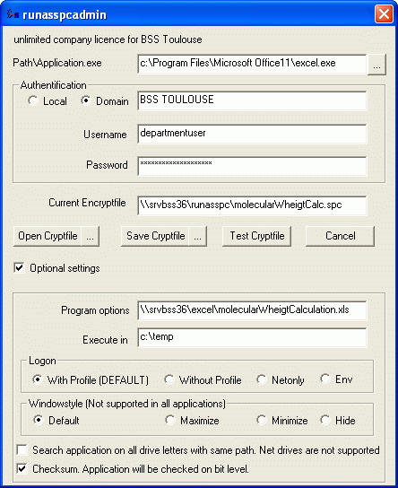
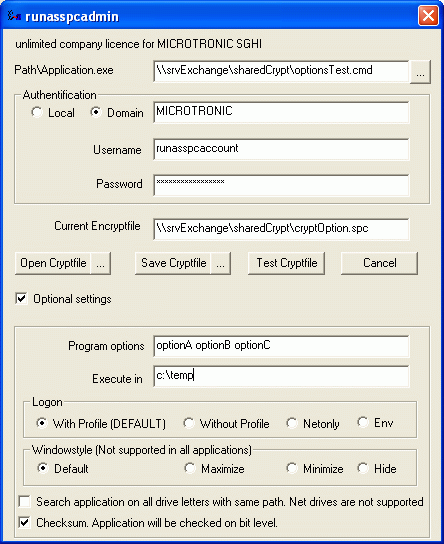
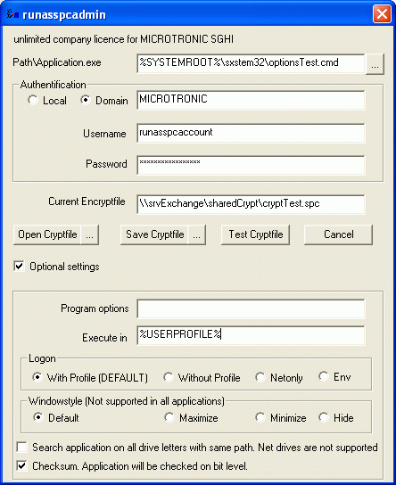

RunAsSpc Details and examples
RunAsSpc Details and examples
Pass a password to Runas with RunAsSpc or use encrypted credentials
You can call RunAsSpc simple and direct like in the following example.
RunAsSpc.exe /program:"c:\windows\system32\regedt32.exe" /user:"admin" /password:"pass"

There is no security check and the password is in plaintext.
If you want to hide the logon credentials you can configure an encrypted file
with RunAsSpc.exe on command line or the graphical user interface RunAsSpcAdmin.exe.
Take a look below on >> Build encrypted files <<.
You can call this encrypted file with RunAsSpc.exe as follows:
A) If the name of the encryped file is >> crypt.spc << , you can start it by a double-click on RunAsSpc.exe.in the same directory.
B) Drag your encrypted file and drop it onto RunAsSpc.exe
C) On command line >>RunAsSpc.exe /cryptfile:"path\NameOfCryptfile" <<
D) Create a shortcut or link like >> c:\path\runasspc.exe /cryptfile:"path\NameOfCryptfile" <<
E) Link the file extension (open with) *.spc on your system to RunAsSpc.exe, to run the encrypted file by double-click.
You can also use your own file extension.
Build encrypted files:
A)
With command RunAsSpc.exe
>> runasspc.exe /cryptfile:"crypt.spc" /program:"prog.exe" /domain:"localhost" /user:"admin" /password:"pass" <<
You find examples in the file readme.txt or call >> runasspc.exe -h << on command line to get help
B)
With graphical user interface RunAsSpcAdmin.exe.
See screenshots below with a lot of example configurations or
take a look to the video
example.
Start registry editor under the local user account localadmin.
Open the Excel document molecularWheigtCalculation.xls under domainaccount departmentuser.

Install msi file acdSee 4.0.msi over the domain account installaccount.

Call a msc file like the computerconsole

To run a vbs script

Insert a registry entry

To start a batchfile like *.bat or *.cmd

To install Java with parameters /S /V /qn

To run a Batchfile with some options like optionA optionB optionC

To use environment variables

Call with rundll32 the >>>Add / Remove programs applet<<<

Contact:
For any suggestions, errors, questions, specific requirements or adjustments please contact:
runas@robotronic.de
Licence:
RunAsSpc is only free for private use.
For companies and other organisations we deliver a licensed version, registered to the organisation name.
Order RunasSpc >>>
Download RunasSpc >>>
Date: 2019-10-13
Data protection
Imprint